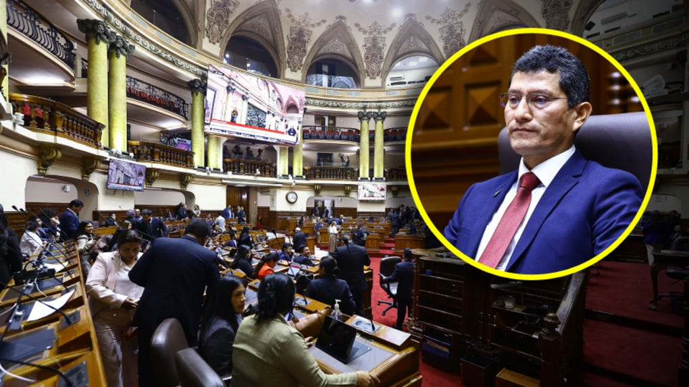
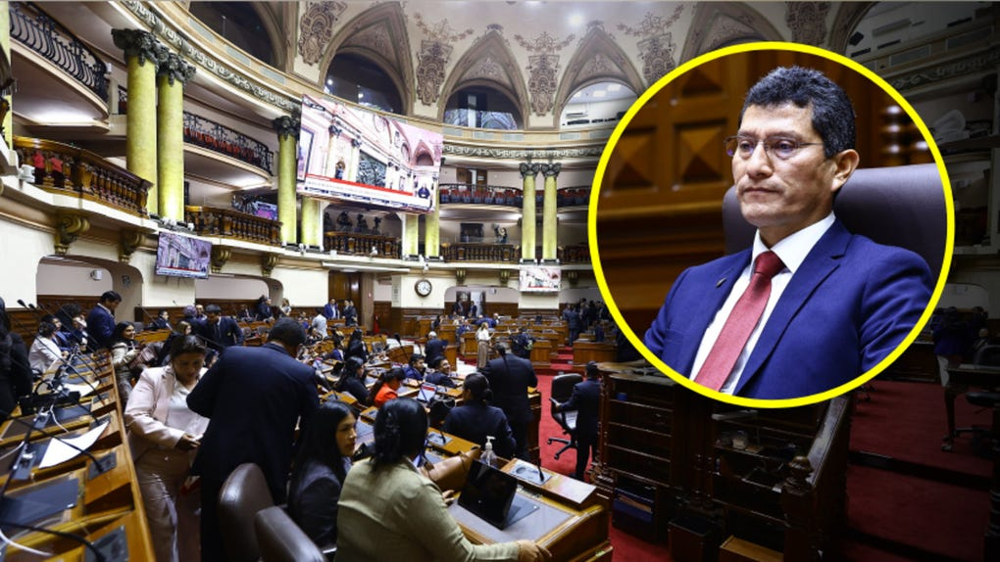
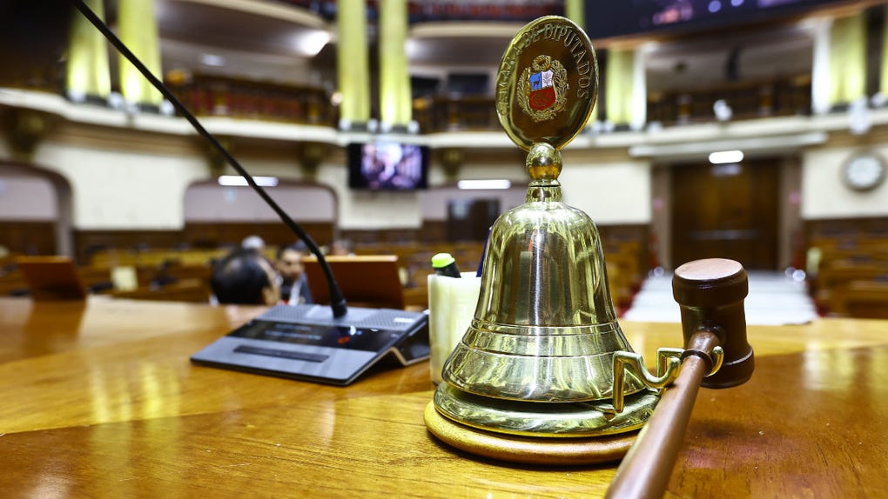

La Comisión de Ética de la Cámara de Diputados quedó formalmente instalada este lunes en la Sala Fabiola Salazar Leguía en medio de un clima de alta tensión política. La sesión, que tenía como objetivo definir la hoja de ruta y elegir la mesa directiva, se vio marcada por el anuncio del congresista Harvey Colchado (Ahora Nación), quien puso su cargo a disposición del pleno minutos después de conocerse que la Fiscalía había solicitado 9 años y 4 meses de prisión efectiva en su contra por los presuntos delitos de negociación incompatible y falsedad ideológica.
El movimiento de Colchado, que tomó por sorpresa a varios de sus colegas, fue interpretado como una estrategia política para ganar tiempo y medir el respaldo de sus pares. El parlamentario condicionó su permanencia en el cargo a que los demás integrantes de la comisión le ratifiquen la confianza de manera explícita. “Pongo mi cargo a disposición del pleno. No estoy aferrado a este puesto, pero considero que la confianza debe ser recíproca. Si la mayoría considera que debo continuar, lo haré con total entrega. Si no, acataré la decisión con responsabilidad”, expresó Colchado durante su intervención.
La decisión del congresista de Ahora Nación se produce apenas horas después de que el Ministerio Público formalizara su requerimiento ante el Poder Judicial. Según el dictamen fiscal, Colchado habría incurrido en negociación incompatible al presuntamente favorecer a particulares en contrataciones durante su gestión anterior, y en falsedad ideológica al declarar información inexacta en documentos oficiales. La solicitud de 9 años y 4 meses de prisión efectiva representa una de las penas más severas solicitadas contra un legislador en activo en lo que va del año.
Fuente: Comisión de Ética / Ministerio Público
La sesión de instalación, convocada para las 11:00 horas, comenzó con la intervención del presidente encargado de la mesa de edad, quien dio la bienvenida a los integrantes de la comisión y recordó el reglamento interno. Sin embargo, el ambiente se tornó tenso cuando el congresista Javier Cipriani tomó la palabra para cuestionar la actitud de Harvey Colchado. Cipriani, conocido por su postura crítica frente a los casos de corrupción, lanzó duras acusaciones contra su colega, señalando que la renuncia condicionada busca entorpecer el trabajo de la comisión.
“Lo que estamos viendo aquí es una maniobra dilatoria. El señor Colchado sabe que tiene una denuncia fiscal grave y lo que pretende es generar ruido para que no podamos avanzar en la agenda ética de esta legislatura. Su renuncia no es un acto de responsabilidad, es un acto de obstrucción”, afirmó Cipriani desde su escaño, en declaraciones que fueron respaldadas por algunos miembros del bloque opositor. El legislador añadió que la comisión no puede permitir que un solo miembro condicione la labor de todo el colegiado.

Ante estas acusaciones, Colchado respondió con firmeza: “No vengo a huir ni a esconderme. Vengo a enfrentar con la verdad lo que se me imputa. Pero no permitiré que se utilice la comisión para adelantar juicios políticos que corresponden al Poder Judicial. Mi pedido de ratificación de confianza es legítimo y está amparado en el reglamento. Si mis pares creen que debo retirarme, lo haré sin generar conflicto”. La réplica del legislador generó un breve murmullo en la sala, que obligó al presidente de la mesa de edad a llamar al orden.
La solicitud de prisión efectiva contra Harvey Colchado no es un hecho aislado. El congresista, quien pertenece a la bancada de Ahora Nación, ha estado en el ojo de la tormenta desde hace varios meses debido a supuestos vínculos con redes de contratación irregular en el sector público. Según la tesis fiscal, Colchado habría utilizado su posición para direccionar licitaciones a favor de empresas vinculadas a personas de su entorno cercano, a cambio de contraprestaciones económicas o beneficios personales. La falsedad ideológica, por su parte, se sustentaría en la omisión de información relevante en sus declaraciones juradas de intereses y en documentos presentados ante la Contraloría.
En el ámbito político, este caso ha generado un fuerte cisma dentro de la Cámara de Diputados. Mientras que los partidos de oposición exigen una sanción ejemplar y consideran que Colchado debería apartarse inmediatamente de toda función legislativa, sus aliados han salido en su defensa, argumentando que existe una persecución política en su contra. “Lo que está en juego no es solo la situación de un congresista, sino la credibilidad de toda la institución parlamentaria”, señaló un analista político presente en la sesión.
Uno de los puntos más relevantes que quedaron pendientes tras la sesión de este lunes es la elección de la mesa directiva de la Comisión de Ética. Según el cronograma establecido por el Consejo Directivo de la Cámara, la votación para designar al presidente, vicepresidente y secretario de la comisión se llevará a cabo el martes 11 de agosto en una nueva sesión extraordinaria. Esta elección es crucial, ya que definirá el rumbo que tomará la comisión en los próximos meses, especialmente en lo relacionado con las investigaciones contra legisladores denunciados por presuntas faltas éticas.
La incertidumbre sobre la continuidad de Colchado en la comisión añade un elemento de complejidad a este proceso. Si la mayoría de los miembros decide ratificar la confianza en el congresista, este podría seguir formando parte del grupo de trabajo, lo que, según sus críticos, afectaría la imparcialidad del organismo. Por el contrario, si la confianza le es negada, Colchado deberá ser reemplazado, lo que implicaría un nuevo proceso de acreditación y podría retrasar las investigaciones en curso.
El congresista Javier Cipriani, quien se perfila como uno de los candidatos a presidir la comisión, fue enfático al respecto: “No podemos permitir que alguien con una acusación penal tan grave tenga injerencia en decisiones éticas de otros legisladores. La comisión debe ser un espacio de transparencia y no puede estar contaminada por intereses particulares. La elección de mañana debe enviar un mensaje claro de que la Cámara de Diputados no tolera la corrupción”.

Mientras se desarrollaba la sesión, varios congresistas se acercaron a los micrófonos de la prensa para expresar su opinión sobre el conflicto. La bancada de Ahora Nación emitió un breve comunicado en el que respaldó la decisión de su colega y calificó la solicitud fiscal como “desproporcionada y sin sustento jurídico”. Por otro lado, los partidos de oposición reiteraron su exigencia de que Colchado se separe de todas sus funciones parlamentarias hasta que se aclare su situación legal.
“No se puede estar en una comisión de ética cuando se tiene una denuncia de esta magnitud. Es una cuestión de coherencia y de respeto a la ciudadanía. Harvey Colchado debería dar un paso al costado de manera definitiva”, declaró la congresista María Elena Sotomayor (Fuerza Social). En contraste, el legislador Alberto Ríos (Unidos por el Cambio) señaló que “la presunción de inocencia es un derecho fundamental, y no podemos condenar a nadie antes de que exista una sentencia firme”.
La discusión también trascendió al ámbito académico y jurídico. Especialistas en derecho penal consultados por este medio coincidieron en que la solicitud de 9 años y 4 meses de prisión es inusualmente alta para los delitos de negociación incompatible y falsedad ideológica, lo que sugiere que la Fiscalía cuenta con elementos de prueba considerables. Sin embargo, advirtieron que el proceso penal podría extenderse por varios años, lo que mantendría a Colchado en una situación de incertidumbre jurídica y política.
Más allá del caso particular, la instalación de la Comisión de Ética y el conflicto generado en torno a Harvey Colchado han puesto en primer plano la necesidad de fortalecer los mecanismos de control interno en el Parlamento. La Cámara de Diputados viene siendo cuestionada en los últimos meses por la lentitud en la tramitación de denuncias éticas y por la falta de sanciones ejemplares contra legisladores involucrados en actos de corrupción.
El presidente de la Cámara, quien no quiso pronunciarse directamente sobre el caso, instó a los integrantes de la comisión a priorizar el diálogo y a no permitir que las diferencias personales entorpezcan la función fiscalizadora del organismo. “La ciudadanía nos observa y exige resultados. No podemos defraudar su confianza”, manifestó en un breve contacto con la prensa al término de la sesión.
En esa línea, varios sectores han planteado la urgencia de aprobar un nuevo código de ética parlamentaria que establezca causales de suspensión automática para legisladores con denuncias penales graves. Esta propuesta, que ya había sido debatida en comisiones anteriores, podría cobrar nueva fuerza a raíz de los acontecimientos de este lunes. Sin embargo, su aprobación requeriría de un amplio consenso político que, en el actual contexto de polarización, parece difícil de alcanzar.
El futuro inmediato de Harvey Colchado dependerá de dos frentes paralelos. Por un lado, el Poder Judicial deberá evaluar la solicitud fiscal y decidir si dicta prisión preventiva contra el congresista o si, por el contrario, dispone que el proceso continúe en libertad. Por otro lado, la Comisión de Ética deberá resolver la situación administrativa del legislador, lo que incluye la decisión sobre la ratificación de confianza solicitada por él mismo.
De acuerdo con el reglamento interno de la Cámara, la renuncia o puesta a disposición de un cargo debe ser aceptada o rechazada por el pleno de la comisión en un plazo no mayor a tres días hábiles. Dado que la elección de la mesa directiva está programada para mañana, es probable que este tema sea abordado en esa misma sesión, lo que añade presión a los integrantes de la comisión para definir su postura de manera rápida y contundente.
Por su parte, Colchado se mostró confiado en que recibirá el respaldo necesario para continuar en el cargo. “No tengo nada que ocultar. He actuado siempre con rectitud y dentro del marco de la ley. Confío en que mis pares sabrán valorar mi trayectoria y mi compromiso con este país. La verdad siempre sale a la luz”, afirmó al retirarse de la Sala Fabiola Salazar Leguía, visiblemente emocionado pero sereno.
La jornada de este lunes ha dejado en evidencia las profundas fisuras que atraviesan al Parlamento peruano en materia de ética y justicia. Lo que suceda en los próximos días no solo definirá el destino de un congresista, sino que podría sentar un precedente clave para el fortalecimiento institucional y la lucha contra la impunidad en el más alto nivel del Estado. Los ojos de la ciudadanía y de la prensa estarán puestos en la sesión del martes, donde se esperan definiciones trascendentales.
© 2026 ParlamentoAlDía – Todos los derechos reservados. Prohibida la reproducción total o parcial sin autorización expresa.